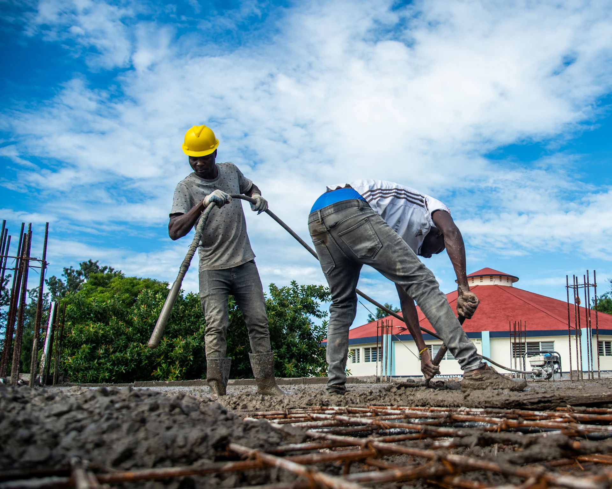
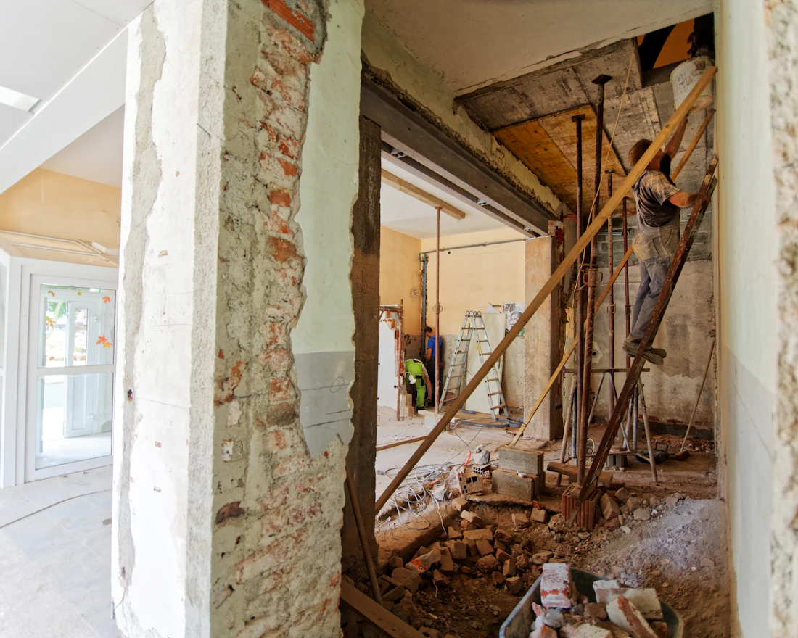
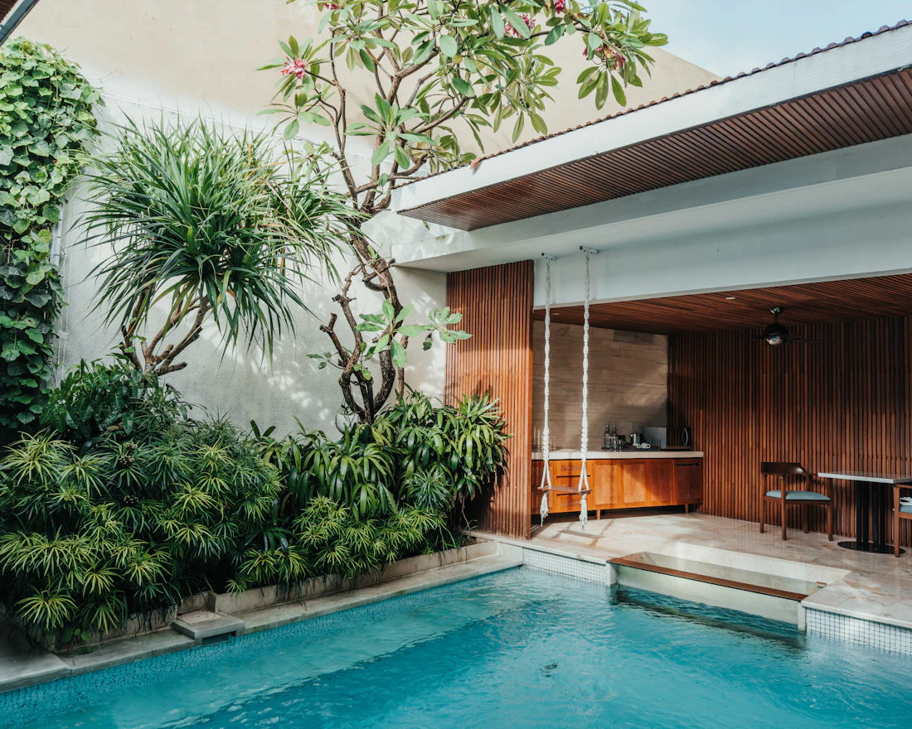

Nos domaines de compétences
Construction neuve, maçonnerie, rénovation, agencement et extérieurs : nous couvrons le gros œuvre comme les finitions, pour les particuliers comme pour les professionnels.

Construction de maisons individuelles
C'est notre cœur de métier. Nous construisons votre maison à partir des plans de votre architecte ou de votre projet, en assurant l'ensemble du gros œuvre et la coordination jusqu'au hors d'eau, hors d'air.
- Implantation et terrassement
- Fondations et soubassements
- Élévation des murs
- Planchers et dalles béton
- Chaînages, linteaux, poteaux
- Coordination des corps d'état

Maçonnerie & gros œuvre
Parpaing, brique, béton banché ou pierre : nous réalisons tous les ouvrages de maçonnerie, du mur de clôture à la structure d'un bâtiment, avec des matériaux adaptés au terrain et au climat méditerranéen.
- Murs porteurs et de refend
- Murs de clôture et de soutènement
- Dalles, chapes et ragréages
- Escaliers et ouvrages béton
- Ouvertures et reprises en sous-œuvre
- Enduits de façade

Rénovation & extension
Redonner vie à une maison ancienne, agrandir, créer une pièce en plus : nous étudions l'existant, puis menons les travaux en limitant la gêne pour les occupants.
- Extension et agrandissement
- Surélévation
- Ouverture de murs porteurs
- Réhabilitation complète
- Démolition et curage
- Reprise de fissures et de façades

Agencement & aménagement intérieur
Une fois les murs debout, nous aménageons les volumes : redistribution des pièces, cloisons, plâtrerie et préparation des espaces de vie, de la cuisine à la salle d'eau.
- Cloisons et doublages
- Plâtrerie et faux plafonds
- Redistribution des pièces
- Cuisines et salles d'eau
- Carrelage et faïence
- Locaux commerciaux et bureaux

Aménagements extérieurs
Dans le Sud, on vit autant dehors que dedans. Nous réalisons les ouvrages qui structurent votre jardin et prolongent la maison vers l'extérieur.
- Terrasses et plages de piscine
- Murets et murs en pierre
- Allées et accès carrossables
- Clôtures et portails maçonnés
- Abris, pool-houses, garages
- Évacuation des eaux pluviales

Sous-traitance & chantiers professionnels
Nous intervenons en sous-traitance pour des entreprises du bâtiment et sur des sites commerciaux, y compris en centre commercial, avec les contraintes d'horaires et de sécurité que cela implique.
- Lots maçonnerie et gros œuvre
- Travaux en site occupé
- Aménagement de cellules commerciales
- Interventions techniques sur chantier
- Facturation en autoliquidation de TVA
- Bouches-du-Rhône, Gard, Hérault
Particuliers ou professionnels, une même exigence.
Vous êtes un particulier
Vous faites construire, agrandir ou rénover votre maison. Nous vous accompagnons à chaque étape et vous expliquons clairement ce qui sera fait, quand et pour quel prix.
- Visite sur place avant tout chiffrage
- Devis détaillé ligne par ligne
- Facturation selon l'avancement des travaux
Vous êtes un professionnel
Entreprise générale, maître d'œuvre ou enseigne : nous prenons en charge vos lots de maçonnerie et de gros œuvre, en respectant votre planning et vos procédures.
- Réactivité sur les demandes de prix
- Respect des contraintes de site
- Documents administratifs à jour (SIRET, TVA)
Votre projet entre dans l'un de ces domaines ?
Parlons-en. Une visite sur place nous permet de vous remettre un devis précis.